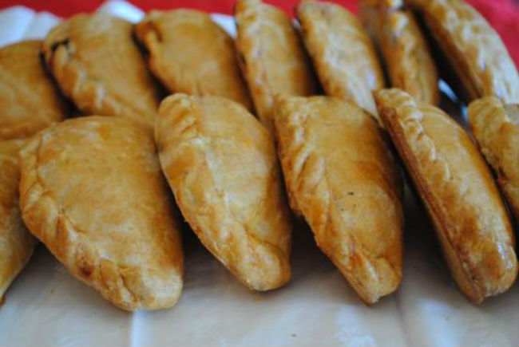

El paste es un alimento tradicional del estado de Hidalgo, México. Su origen se remonta a los mineros de Cornualles, Inglaterra que laboraron en las minas de la región en el siglo XIX, quienes introdujeron el cornish pasty a la región, pero este pasó un proceso de adaptación y modificación, de donde surgió el paste.
